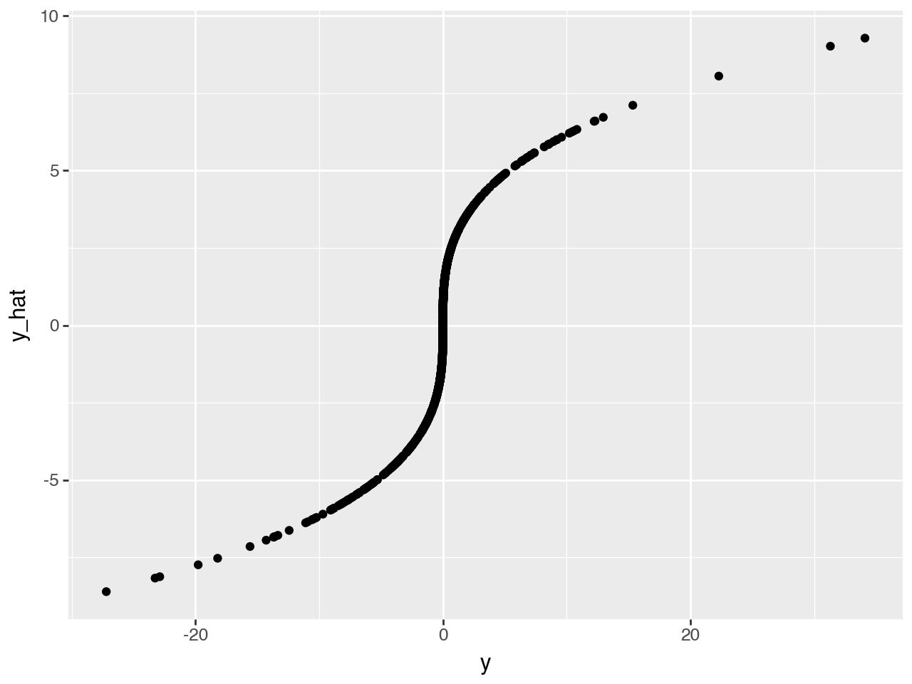

# Run this command if you get ModuleNotFoundError: No module named 'sklearn'# %pip install scikit-learn # Run this command if you get ModuleNotFoundError: No module named 'plotnine'# %pip install plotnine
Estimated
[41.06972678 6.79965716]
Ground truth
[40.71064891 6.60098441]
The estimated is a good approximation of the ground truth, given limited sample size and noise.
Stochastic gradient descent
Although linear regression has analytical solutions, this is unfortunately not the case for many other models. We may need to resort to numerical approximations to find the optimal parameters. One of the most popular numerical optimizers is called stochastic gradient descent.
What is a gradient?
A gradient is the first derivative of a function.
$f’(β) = lim_{Δβ → 0} = $
What is gradient descent?
We would like to find the \(\hat{β}\) that minimizes \(f(β)\). We can do this iteratively moving along the direction of the gradient. At a particular \(β_i\), we find the gradient \(f'(β)\), and take a step along the direction of the gradient to find the next point \(β_{i+1}\).
\(β_{i+1} = β_i - \alpha f'(β_i)\)
The \(\alpha\) is called the learning rate. It is a hyperparameters that determines how fast we move in the direction of the gradient.
gradient descent
What is stochastic gradient descent?
In real-world applications, the size of our dataset is so large that it is impossible to calculate the gradient using all data points. Therefore, we take a small chunk (called a “batch”) of the dataset to calcalate the gradient. This approximates the full-data gradients, thus the word stochastic.
Three components of machine learning
Suppose we want to build a machine learning model to predict \(y\) based on \(x\). We need three components:
a model. In this case we use a linear model
a loss function.
an optimizer. In this case we use gradient descent or stochatic gradient descent.
The loss function
We want our prediction \(\hat{y} = f(\beta)\) to be as close to \(y\) as possible. Therefore, we want to minimize
Add to the plot the normal equation estimates (traditional linear regression) of the coefficients in a different green
Exercise 2
Simulate y with larger noise, estimate the regression coefficients using the normal equation and the gradient descent method, and plot the trajectory, the ground truth, and the two estimates for comparison.
Summary of section 1
In this section, we learned
The linear model
The normal equation
Stochastic gradient descent
Section 2: multi-layer perceptrons
Simulation
Let’s start by simulating data according to the generative model:
$ y = x_1^3$
Code
x = np.random.normal(size=1000)y = x **3
Let’s start with a simple linear regression model
$ y = X $
Code
lr =0.1# learning rateb =0.0# initialize all betas to 0n_examples =len(y)for _ inrange(50): # 50 steps diff = x.dot(b) - y grad = diff.dot(x) / n_examples b -= lr*grad
Code
y_hat = x.dot(b)qplot(x = y, y=y_hat, geom="point", xlab="y", ylab="y_hat")

That looks like a terrible prediction! What do we do?
Multi-layer perceptrons
MLP
An MLP can be thought of as multi-layer linear regression. Each circle in the hidden layer is called a “neuron”, and can be thought of as intermediate output y’s.
These intermediate y’s will be the input for the next layer, which will again be linearly combined to output the next layer.
In a hand-wavy way, we can express a 2-layer MLP as:
\(y = W_2 (W_1 X + b_1) + b_2\)
Question
What is missing to be exactly a two layer MLP?
Introducing PyTorch
It is cumbersome to derive the update rules for an MLP. Luckily, deep learning frameworks such as PyTorch does that automatically for us. We will build a simple PyTorch model to predict y’s based on x’s.
First let’s define our model. We would like to build a neural network with 3 hidden layers.
Simulation
Let’s first simulate some data according to this generative function.
$ y = _0 + _1 x_1 + _2 x_2 + ϵ$
Where \(\beta_0 = 5\) and \(\epsilon \sim N(0,10)\)
Code
## if no ModuleNotFoundError: No module named 'torch'%pip install torch torchvision
Requirement already satisfied: torch in /Users/haekyungim/miniconda3/envs/test312/lib/python3.12/site-packages (2.6.0)
Collecting torchvision
Downloading torchvision-0.21.0-cp312-cp312-macosx_11_0_arm64.whl.metadata (6.1 kB)
Requirement already satisfied: filelock in /Users/haekyungim/miniconda3/envs/test312/lib/python3.12/site-packages (from torch) (3.18.0)
Requirement already satisfied: typing-extensions>=4.10.0 in /Users/haekyungim/miniconda3/envs/test312/lib/python3.12/site-packages (from torch) (4.12.2)
Requirement already satisfied: networkx in /Users/haekyungim/miniconda3/envs/test312/lib/python3.12/site-packages (from torch) (3.4.2)
Requirement already satisfied: jinja2 in /Users/haekyungim/miniconda3/envs/test312/lib/python3.12/site-packages (from torch) (3.1.6)
Requirement already satisfied: fsspec in /Users/haekyungim/miniconda3/envs/test312/lib/python3.12/site-packages (from torch) (2025.3.0)
Requirement already satisfied: setuptools in /Users/haekyungim/miniconda3/envs/test312/lib/python3.12/site-packages (from torch) (75.8.0)
Requirement already satisfied: sympy==1.13.1 in /Users/haekyungim/miniconda3/envs/test312/lib/python3.12/site-packages (from torch) (1.13.1)
Requirement already satisfied: mpmath<1.4,>=1.1.0 in /Users/haekyungim/miniconda3/envs/test312/lib/python3.12/site-packages (from sympy==1.13.1->torch) (1.3.0)
Requirement already satisfied: numpy in /Users/haekyungim/miniconda3/envs/test312/lib/python3.12/site-packages (from torchvision) (2.2.4)
Requirement already satisfied: pillow!=8.3.*,>=5.3.0 in /Users/haekyungim/miniconda3/envs/test312/lib/python3.12/site-packages (from torchvision) (11.1.0)
Requirement already satisfied: MarkupSafe>=2.0 in /Users/haekyungim/miniconda3/envs/test312/lib/python3.12/site-packages (from jinja2->torch) (3.0.2)
Downloading torchvision-0.21.0-cp312-cp312-macosx_11_0_arm64.whl (1.8 MB)
━━━━━━━━━━━━━━━━━━━━━━━━━━━━━━━━━━━━━━━━ 1.8/1.8 MB 12.8 MB/s eta 0:00:00
Installing collected packages: torchvision
Successfully installed torchvision-0.21.0
Note: you may need to restart the kernel to use updated packages.
We are now ready to train our model. To understand how our model is doing, we record the loss vs step, which is called the learning curve in ML literature.
The Universal Approximation Theorem states that a neural network with 1 hidden layer can approximate any continuous function for inputs within a specific range.
We won’t go into details here but check out this post if you are interested: http://neuralnetworksanddeeplearning.com/chap4.html
Summary of section 2
In section 2, we learned the following things:
Multi-layer perceptrons
basic PyTorch
The universal approximation theorem
Section 3: Convolutional neural networks
Let’s try to use an MLP to predict on image data.
We will be using the CIFAR10 dataset, The CIFAR-10 dataset consists of 60000 32x32 colour images in 10 classes, with 6000 images per class. There are 50000 training images and 10000 test images.
We want to predict the object class given the image.
cifar
Code
# install torchvision as needed%pip install torch torchvision torchmetrics tqdm
Requirement already satisfied: torch in /Users/haekyungim/miniconda3/envs/test312/lib/python3.12/site-packages (2.6.0)
Requirement already satisfied: torchvision in /Users/haekyungim/miniconda3/envs/test312/lib/python3.12/site-packages (0.21.0)
Requirement already satisfied: torchmetrics in /Users/haekyungim/miniconda3/envs/test312/lib/python3.12/site-packages (1.7.0)
Collecting tqdm
Downloading tqdm-4.67.1-py3-none-any.whl.metadata (57 kB)
Requirement already satisfied: filelock in /Users/haekyungim/miniconda3/envs/test312/lib/python3.12/site-packages (from torch) (3.18.0)
Requirement already satisfied: typing-extensions>=4.10.0 in /Users/haekyungim/miniconda3/envs/test312/lib/python3.12/site-packages (from torch) (4.12.2)
Requirement already satisfied: networkx in /Users/haekyungim/miniconda3/envs/test312/lib/python3.12/site-packages (from torch) (3.4.2)
Requirement already satisfied: jinja2 in /Users/haekyungim/miniconda3/envs/test312/lib/python3.12/site-packages (from torch) (3.1.6)
Requirement already satisfied: fsspec in /Users/haekyungim/miniconda3/envs/test312/lib/python3.12/site-packages (from torch) (2025.3.0)
Requirement already satisfied: setuptools in /Users/haekyungim/miniconda3/envs/test312/lib/python3.12/site-packages (from torch) (75.8.0)
Requirement already satisfied: sympy==1.13.1 in /Users/haekyungim/miniconda3/envs/test312/lib/python3.12/site-packages (from torch) (1.13.1)
Requirement already satisfied: mpmath<1.4,>=1.1.0 in /Users/haekyungim/miniconda3/envs/test312/lib/python3.12/site-packages (from sympy==1.13.1->torch) (1.3.0)
Requirement already satisfied: numpy in /Users/haekyungim/miniconda3/envs/test312/lib/python3.12/site-packages (from torchvision) (2.2.4)
Requirement already satisfied: pillow!=8.3.*,>=5.3.0 in /Users/haekyungim/miniconda3/envs/test312/lib/python3.12/site-packages (from torchvision) (11.1.0)
Requirement already satisfied: packaging>17.1 in /Users/haekyungim/miniconda3/envs/test312/lib/python3.12/site-packages (from torchmetrics) (24.2)
Requirement already satisfied: lightning-utilities>=0.8.0 in /Users/haekyungim/miniconda3/envs/test312/lib/python3.12/site-packages (from torchmetrics) (0.14.2)
Requirement already satisfied: MarkupSafe>=2.0 in /Users/haekyungim/miniconda3/envs/test312/lib/python3.12/site-packages (from jinja2->torch) (3.0.2)
Downloading tqdm-4.67.1-py3-none-any.whl (78 kB)
Installing collected packages: tqdm
Successfully installed tqdm-4.67.1
Note: you may need to restart the kernel to use updated packages.
You will notice that the test loss starts to rise at epoch 50. This is called overfitting. There are many ways to address this, but we won’t go into details for this introduction.
Test accuracy is bad. Can we do better?
Convolutional neural networks
The key ingredient in CNNs is the convolutional filter. A convolutional filter is a small patch to extract a specific pattern from the input image.
CNN
Code
class CNN(nn.Module):def__init__(self):super().__init__()self.conv1 = nn.Conv2d(3, 6, 5)self.pool = nn.MaxPool2d(2, 2)self.conv2 = nn.Conv2d(6, 16, 5)self.fc1 = nn.Linear(16*5*5, 120)self.fc2 = nn.Linear(120, 84)self.fc3 = nn.Linear(84, 10)def forward(self, x): x =self.pool(F.relu(self.conv1(x))) x =self.pool(F.relu(self.conv2(x))) x = torch.flatten(x, 1) # flatten all dimensions except batch x = F.relu(self.fc1(x)) x = F.relu(self.fc2(x)) x =self.fc3(x)return xcnn = CNN().to(device)loss_fn = nn.CrossEntropyLoss()optimizer = Adam(cnn.parameters(), lr=0.001)
Remarkably, CNN achieved better performance with a smaller number of parameters.
Summary of section 3
In section 3, we learned the following things:
CNNs
Code
# Section 4: Transformers
The transformer architecture is originally invented for machine translation (MT). MT is a structured prediction problem - the output at each timestep \(t\) dependenst on the previous timesteps 1 to \(t-1\). Therefore, the transformer architecture is composed of two parts: the encoder and the decoder. The encoder will encode the source sentence (e.g. Spanish) into a vector representation, and the decoder will decode the vector space into the target sentence (e.g. English).
However, enformer is not a structured prediction problem, it is a regression problem. Therefore, it only needs the transformer encoder. Therefore, we will focus on the encoder today.
transfomer encoder
You are already familiar with the feed-forward network - this is the same thing as MLP we covered earlier. But what is multi-head attention (MHA)?
To understand MHA, we need to know what attention is.
attention
Attention can be done in many ways. The transformer paper uses the dot-product attention. Suppose that we have a three tensors \(q \in R^{1, d}, K \in R^{l, d}, V \in R^{l, d}\). We will first take the softmax of the dot product of \(attn = softmax(q K^T) \in R^{1,l}\). This gives us the probability of \(q\) attending to each element of \(K\). We can then take the dot product between \(attn \cdot V \in R^{1, d}\), which is a weighted sum of V.
This is essentially what transformer is doing. Instead of using a vector \(q\), they used a matrix \(Q\) for parallel computation.
So what does multi-head mean? It just means that we have multiple attention mechanisms. Before the feedforward layer, we will concatenate the multiple attention heads.
Code
%pip install torchtext
Requirement already satisfied: torchtext in /Users/haekyungim/miniconda3/envs/torch311/lib/python3.11/site-packages (0.18.0)
Requirement already satisfied: tqdm in /Users/haekyungim/miniconda3/envs/torch311/lib/python3.11/site-packages (from torchtext) (4.67.1)
Requirement already satisfied: requests in /Users/haekyungim/miniconda3/envs/torch311/lib/python3.11/site-packages (from torchtext) (2.32.3)
Requirement already satisfied: torch>=2.3.0 in /Users/haekyungim/miniconda3/envs/torch311/lib/python3.11/site-packages (from torchtext) (2.6.0)
Requirement already satisfied: numpy in /Users/haekyungim/miniconda3/envs/torch311/lib/python3.11/site-packages (from torchtext) (2.2.4)
Requirement already satisfied: filelock in /Users/haekyungim/miniconda3/envs/torch311/lib/python3.11/site-packages (from torch>=2.3.0->torchtext) (3.18.0)
Requirement already satisfied: typing-extensions>=4.10.0 in /Users/haekyungim/miniconda3/envs/torch311/lib/python3.11/site-packages (from torch>=2.3.0->torchtext) (4.12.2)
Requirement already satisfied: networkx in /Users/haekyungim/miniconda3/envs/torch311/lib/python3.11/site-packages (from torch>=2.3.0->torchtext) (3.4.2)
Requirement already satisfied: jinja2 in /Users/haekyungim/miniconda3/envs/torch311/lib/python3.11/site-packages (from torch>=2.3.0->torchtext) (3.1.6)
Requirement already satisfied: fsspec in /Users/haekyungim/miniconda3/envs/torch311/lib/python3.11/site-packages (from torch>=2.3.0->torchtext) (2025.3.0)
Requirement already satisfied: sympy==1.13.1 in /Users/haekyungim/miniconda3/envs/torch311/lib/python3.11/site-packages (from torch>=2.3.0->torchtext) (1.13.1)
Requirement already satisfied: mpmath<1.4,>=1.1.0 in /Users/haekyungim/miniconda3/envs/torch311/lib/python3.11/site-packages (from sympy==1.13.1->torch>=2.3.0->torchtext) (1.3.0)
Requirement already satisfied: charset-normalizer<4,>=2 in /Users/haekyungim/miniconda3/envs/torch311/lib/python3.11/site-packages (from requests->torchtext) (3.4.1)
Requirement already satisfied: idna<4,>=2.5 in /Users/haekyungim/miniconda3/envs/torch311/lib/python3.11/site-packages (from requests->torchtext) (3.10)
Requirement already satisfied: urllib3<3,>=1.21.1 in /Users/haekyungim/miniconda3/envs/torch311/lib/python3.11/site-packages (from requests->torchtext) (2.3.0)
Requirement already satisfied: certifi>=2017.4.17 in /Users/haekyungim/miniconda3/envs/torch311/lib/python3.11/site-packages (from requests->torchtext) (2025.1.31)
Requirement already satisfied: MarkupSafe>=2.0 in /Users/haekyungim/miniconda3/envs/torch311/lib/python3.11/site-packages (from jinja2->torch>=2.3.0->torchtext) (3.0.2)
Note: you may need to restart the kernel to use updated packages.
/usr/local/lib/python3.7/dist-packages/plotnine/utils.py:1246: FutureWarning: is_categorical is deprecated and will be removed in a future version. Use is_categorical_dtype instead
if pdtypes.is_categorical(arr):